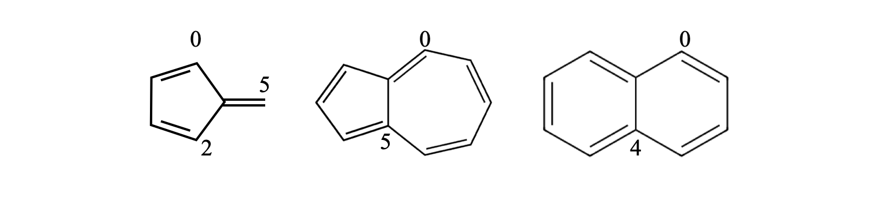

Questions 1 - 10
Contents
Questions 1 - 10#
Q1 Lorenz determinant#
Evaluate the Lorentz determinant \(\displaystyle \;d\begin{vmatrix} 1 & -v \\ \displaystyle -\frac{v}{c} & 1 \\ \end{vmatrix}\)
where \(c\) is the speed of light and \(v\) the velocity of a body and \(d=c/\sqrt{c^2-v^2}\).
Q2 Zero determinant#
Show that \(\displaystyle \qquad \begin{vmatrix} 0 & y & z \\ x & 0 &-z \\x & y & 0 \end{vmatrix}=0\)
Q3 Characteristic polynomial#
Determine the characteristic polynomial of \(\displaystyle \quad \begin{vmatrix} x & a & b \\ a & x & b \\a & b & x \end{vmatrix}\quad\) and solve it for \(x\).
Q4 Cofactor#
Calculate the cofactor of the \((2, 3)\) element of \(\displaystyle \quad \begin{vmatrix} a & b & x \\ c & d & 1 \\e & f & y \end{vmatrix}\).
Q5 Zero determinant#
(a) Use Python to calculate the determinant of the first \(16\) numbers starting at \(1\). Explain why the determinant is zero. Construct the matrix explicitly then repeat the calculation using a procedure containing two ‘for’ loops
(b) Change the matrix, using your procedure, to calculate the determinant of the cube of each of the first \(49\) numbers starting at \(1\).
Strategy: Use the Python method in the text to define a matrix. In part (a) the matrix is small enough to be written by hand. In (b) we could also do this by hand but it is easier to use two loops, one for rows the other for columns which enables us to make a matrix of any size.
Q6 Prime number determinant#
Calculate the determinant of the first sixteen prime numbers.
Strategy: Find out how to calculate the prime numbers. The rest of the calculation is essentially the same as previous questions.
Q7 Linear polyene#
In a linear polyene, the only interactions lie on the diagonal and 1 element to the right or left of this, a tri-diagonal form, but in the cyclic polyenes the first atom has to interact with the last in the ring, atom \(1\) with atom \(6\) in benzene for example. Modify Algorithm 1 and construct the Huckel matrix for any cyclic polyene.
(a) Calculate the MO energies for benzene and cyclo-octatetraene assuming that \(x=(\alpha-E)/\beta\).
(b) Sketch and label the energy levels.
Strategy: Work out what it means to form a ring by adding extra matrix elements to the Huckel MO matrix.
Q8 Fulvalene energy#
Fulvalene has the structure

Write down the Huckel matrix in terms of \(x\) and calculate the energies. Recall that only adjacent atoms are connected in the matrix. What is the stabilization energy on forming \(\pi\) bonds and is this molecule more or less stable than benzene? In the structure the right-hand most carbon is labelled as number one.
Strategy: The only difference here compared to previous calculations is that the ring joins atoms \(6\) and \(2\), not \(6\) and \(1\) as in benzene. The matrix elements corresponding to these atoms must each contain \(1\).
Q9 Na\(_3\)#
The molecule Na\(_3\) exists as a covalently bound molecule in the vapour phase and its spectroscopy has been studied.
(a) Using Huckel theory, work out if the linear or triangular arrangement of atoms is the most stable.
(b) which arrangement of atoms is most stable in Na\(_3^+\)?
(c) Calculate the energy, as the bond is opened from a triangular to straight form, assuming a very crude model in which the overlap on the outside two atoms varies as \(\beta e^{-r/d}\) where \(r\) is their separation assuming that the bond length is \(d\). The overlap \(\beta\) accounts for the interaction at the normal bond length, and the exponential describes just how the overlap decreases as the atoms separate.
Strategy: The molecule has three s electrons that can become involved in bonding. The reference energy, without forming an MO, is the self-energy \(\alpha\) of the three electrons. In (c) the \(\beta\) is changed due to the separation of two of the atoms as they move round in a circle from the bent to straight form. Use the cosine rule to work out how the distance \(r\) varies with bond angle \(\theta\). It is not obvious which energy levels are lowest, so plot all three to determine this and then calculate the total energy. Use values \(\alpha = 0;\; \beta = -1\) to observe the trend with bond angle. The value of \(\alpha\) does not matter, because every energy contains a term \(+\alpha\). The value of \(\beta\) should be negative; the exact value does not matter as only trends are sought in this crude model.
Q10 Polyene energy recursion formula#
(a) Show that the characteristic equation for the Huckel energy of the nth linear polyene’s molecular orbitals can be written as the recursion formula \(f_n(x) = xf_{n-1}(x) - f_{n-2}(x)\) where \(f_{n-1}\) is the equation for the \((n - 1)^{th}\) polyene. The \(n^{th}\) polyene has a characteristic equation found evaluating the \(n \times n\) determinant
and when \(n = 1\), corresponding to a single carbon atom, let \(f_1(x) = x\).
Strategy: A recursive function is one that depends upon previous functions of the same type, and by knowing only a few initial values, perhaps only one or two, all the others can be determined. Many types of polynomials, such as Hermites, can be defined recursively; see Chapter 1. It is necessary, therefore, to work out a few examples, in this case two initial values, and then by induction find a formula relating \(f_n\) to \(f_{n-1}\) and \(f_{n-2}\) from which all the remaining formulae can be obtained. The subscript \(n\) indicates the index of the function.
Figure 6. Linear polyenes